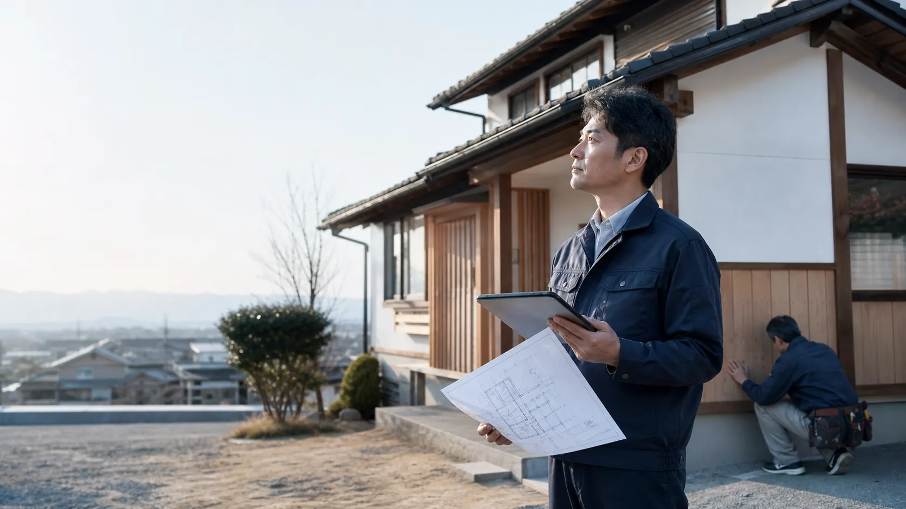
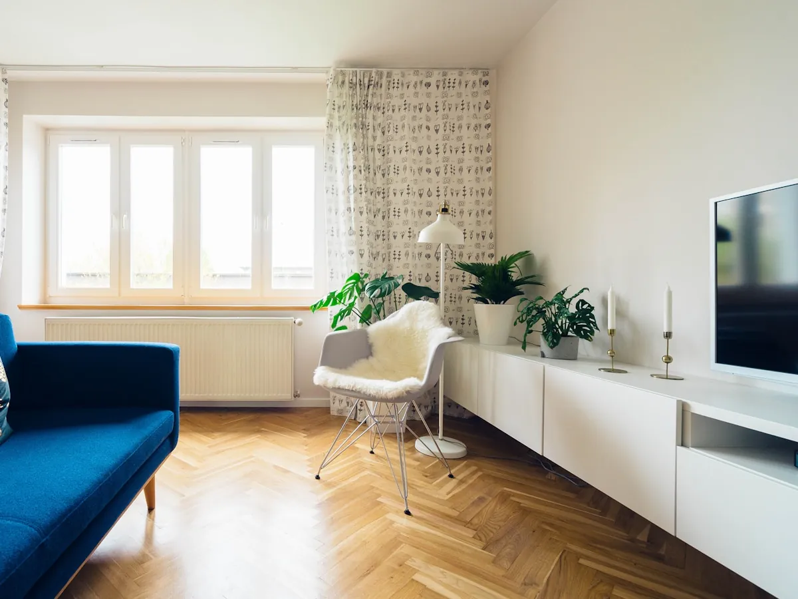

SIGNS
家づくりで、こんな不安はありませんか。
小さな迷いをそのままにして進めてしまうと、あとで後悔につながることがあります。まずは、いま感じている不安を言葉にするところから始めませんか。
何から相談すればいいのか分からない
予算内でどこまで理想を叶えられるか不安
地元の工務店の中でどこを選べばいいか迷っている
建て替えとリフォーム、どちらが良いか判断できない
打ち合わせで希望をうまく伝えられるか心配
工事中の様子が見えず、仕上がりまで不安になりそう
こうした迷いは、経験豊富な担当者と一緒に整理することで、次の一歩がきっと見えてきます。
WHY TSUMUGI
つむぎ工務店が選ばれる理由
先ほどのようなお悩みに、つむぎ工務店はこんな形でお応えします。
まずはじっくりヒアリングから
何から話せばいいか分からなくても大丈夫。漠然としたイメージや希望を、担当者が言葉にするお手伝いをします。
国産無垢材へのこだわり
木を「紡ぐ」ように、産地の見える国産無垢材を中心に採用。年月を経るほど味わいが増す、経年美化する住まいを提案します。
ご予算に応じた、正直なご提案
理想と予算のバランスを最初に整理し、実現できる範囲を分かりやすくお伝えします。無理な提案はいたしません。
自由設計×高い提案力
建築士・インテリアコーディネーターが伴走し、新築かリフォームかを含めて暮らし方から検討。規格に縛られない一邸ごとのプランをご提案します。
進捗が見える、こまめな現場報告
着工後も定期的に写真付きで進み具合をご報告。工事中の様子が見えない不安を残しません。
地域密着のアフターサポート
引き渡し後も定期点検とメンテナンスで長くお付き合い。顔の見える地域の工務店だからこその安心をお届けします。
TRACK RECORD
数字で見るつむぎ工務店
0棟
累計施工実績
0年
創業からの歩み
0%
お客様満足度
0名
専属スタッフ数

ABOUT US
「暮らしを紡ぐ」を、創業から一貫して。
家は建てて終わりではなく、そこからご家族の物語が始まる場所。だからこそ、素材選びにも、暮らし方のヒアリングにも、時間を惜しみません。
1998年の創業以来、地域のお客様と共に歩んできたつむぎ工務店。代表挨拶や沿革、会社概要など詳しい情報はこちらでご紹介しています。
SERVICES
サービス一覧
新築からリフォーム、外構、素材コーディネートまでワンストップで対応します。

WORKS
悩みから見る施工事例
同じリフォーム・新築でも、住まいの状態やご家族によって内容は変わります。お悩みから施工内容、費用目安まで分かる形でご紹介します。

緑と暮らす、木格子の平屋
- お悩み
- 庭の緑を活かしたいが、外からの視線が気になっていた
- 施工内容
- リビング全面に国産杉の木格子スクリーンを設けた平屋の新築
- 費用目安・工期
- 2,300万円〜 / 約7ヶ月
格子越しに庭の緑が見えて、光と風は入るのに外からの視線が気にならなくなりました。平屋なので家族の気配も感じやすく、毎日が心地いいです。
40代ご夫婦
新築 / つむぎ市

光を取り込む、大きな窓の家
- お悩み
- 部屋が暗くなりがちで、開放的なリビングに憧れていた
- 施工内容
- 南面に大きな窓を配置し、吹き抜けとつながる明るいリビングを新築
- 費用目安・工期
- 2,050万円〜 / 約8ヶ月
朝から家中が明るくて、電気をつける時間がぐっと減りました。窓が大きくても断熱性能はしっかりしていると聞いて、安心して選ぶことができました。
30代ご家族
新築 / つむぎ市

築30年の実家をリノベーション
- お悩み
- 実家を二世帯で住めるようにしたいが、費用や工期が読めず不安だった
- 施工内容
- 既存の梁を活かした、断熱・耐震補強を含む二世帯フルリフォーム
- 費用目安・工期
- 980万円〜 / 約4ヶ月
解体してみないと分からない部分もあると聞いていましたが、そのつど写真付きで説明してもらえたので、追加の費用にも納得しながら進められました。
二世帯ご家族
リフォーム / つむぎ市
※費用目安・工期はデモサイト用の想定値です。実際の金額は現地確認後のお見積りでご案内します。
PRICE
費用は、まず目安からご案内します
「相場が分からず相談しづらい」という声にお応えして、代表的な費用帯を先にご紹介します。正式な金額は、現地確認後のお見積りでご案内します。
新築注文住宅
平屋プラン
延床25〜35坪
1,800万円〜
2階建てプラン
延床30〜40坪
2,200万円〜
フルオーダープラン
延床40坪〜
2,800万円〜
リフォーム・リノベーション
水まわり部分改修
キッチン+浴室など
150万円〜
間取り変更リフォーム
1〜2部屋規模
400万円〜
フルリノベーション
耐震・断熱含む全面改修
1,200万円〜
外構・エクステリア
アプローチ+駐車場
シンプルプラン
60万円〜
ウッドデッキ+植栽
中規模プラン
120万円〜
外構フルプラン
庭全体のトータルデザイン
250万円〜
自然素材・木材コーディネート
無垢フローリング
新築時オプション
+30万円〜
造作家具コーディネート
1点あたり
15万円〜
自然塗料仕上げ変更
全面
+20万円〜
※上記はいずれも目安です(デモ表示)。延床面積・仕様・敷地条件により変動します。詳しい内訳は無料相談でお伝えします。
FLOW
家づくりの流れ
ご相談から完成・引き渡しまで、平均して6〜10ヶ月ほどでお引き渡しします。
WARRANTY
お引き渡し後も、記録と点検で支えます
家づくりは、鍵をお渡しした日がゴールではありません。工事の記録を残し、点検とアフター相談で長くお付き合いします。
工事保証
構造・防水など、部位ごとの保証期間を書面でお渡しします。
定期点検
引き渡し後も節目ごとに訪問し、住まいの状態を確認します。
施工写真の記録
完成後に見えなくなる部分も、写真で一枚ずつ残します。
アフター相談窓口
気になることがあれば、工事後もいつでもご相談いただけます。
BLOG
ブログ新着記事
家づくりに役立つ情報やお手入れのコツをお届けします。


FAQ
よくあるご質問
まだ相談段階でも大丈夫ですか?
はい、大丈夫です。土地探し前の漠然としたイメージの段階でも、お気軽にご相談ください。
費用はどのくらいから相談できますか?
おおよそのご予算だけでも構いません。実現できる範囲を一緒に整理し、無理な提案はいたしません。
リフォームと建て替え、どちらが良いか分かりません。
建物の状態を拝見したうえで、リフォームと建て替え、それぞれのメリット・デメリットを比較してご提案します。
他社にも相見積もりを取っていますが、相談しても良いですか?
もちろんです。比較検討中の段階でも、根拠のあるお見積りをご提示しますので、判断材料としてご活用ください。
打ち合わせの回数や期間はどのくらいですか?
新築の場合、平均して4〜6回、設計だけで2〜3ヶ月ほどお時間をいただくことが多いです。
施工中の様子は見学できますか?
はい。定期的な進捗のご報告に加えて、ご希望があれば現場見学も承っております。
対応エリアを教えてください。
つむぎ市を中心に近隣エリアに対応しています。詳しくはお問い合わせ時にご確認ください。
CONTACT
まずは無料相談から、
家づくりを始めませんか。
土地探しの段階でも、まだ漠然としたイメージでも構いません。専門スタッフが親身にお応えします。